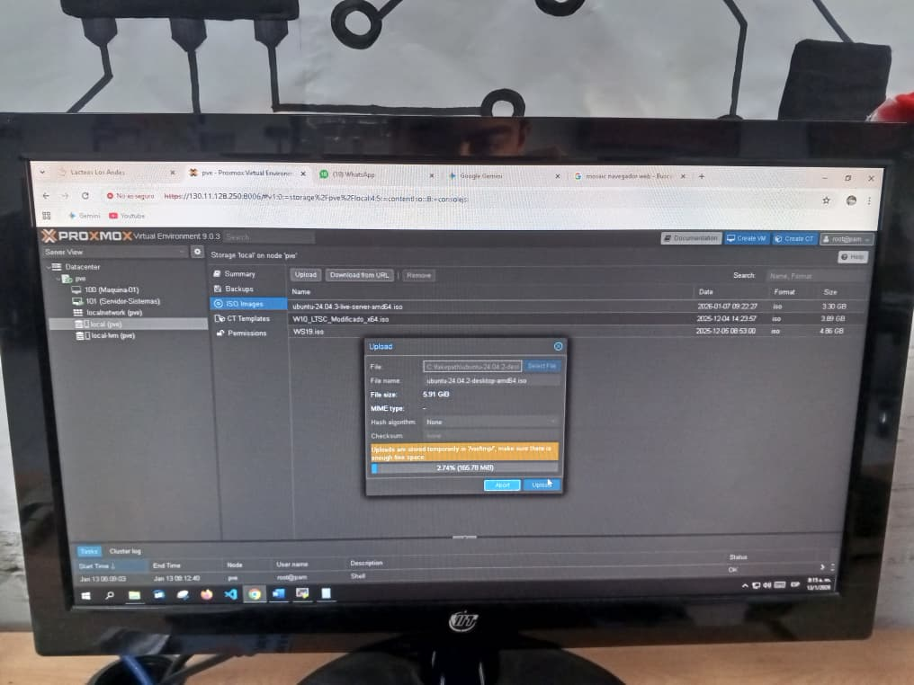
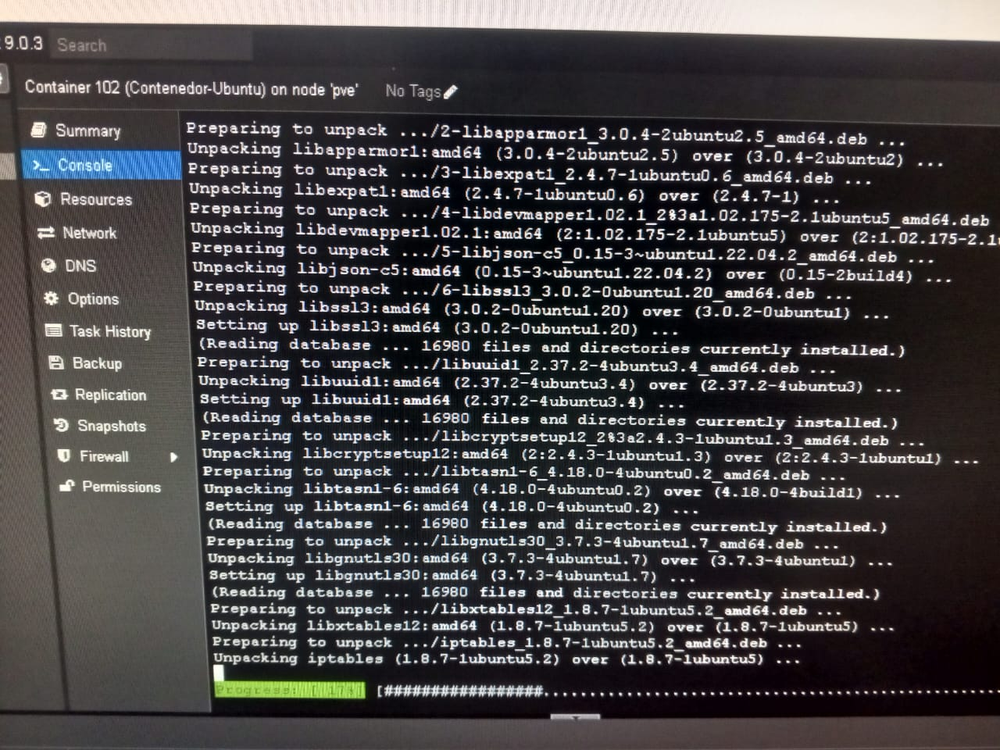
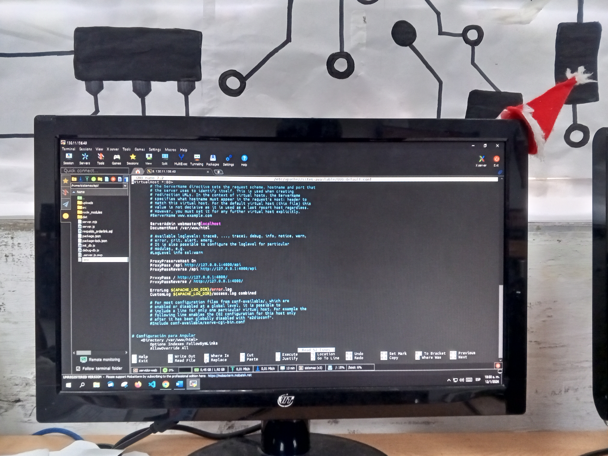
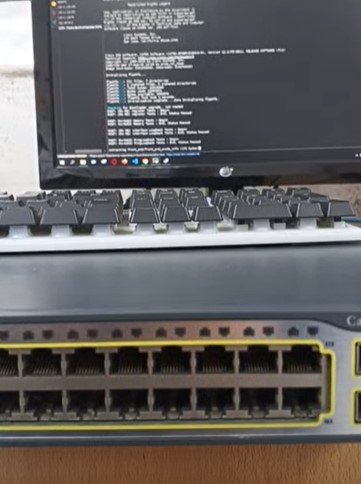

La tecnología nos permite a las personas comunes hacer cosas extraordinarias.
Virtualización de servidores y gestión de contenedores (LXC).
Administración centralizada de servidores mediante MobaXterm .
Configuración avanzada de dispositivos de red como Routers y Switches.

Instalación del sistema operativo Proxmox VE. El proyecto incluyó la configuración desde cero de nodos físicos, almacenar las ISO necesarias para futuros proyectos y el despliegue de Máquinas Virtuales (MV), garantizando un entorno seguro, escalable y de baja latencia

Instalación de una MV con Ubuntu Server. En este servidor alojé un proyecto web desarrollado por un tercero que usó Angular, en el que ejecuté un comando para extraer una carpeta llamada dist ya que esta carpeta contiene solo archivos html, js y css livianos. ejecuté el directorio donde coloqué los archivos que están dentro de la carpeta dist, en este directorio alojé en otras palabras, el Front-end. Por otro lado, para el Back-end primero instalé apache para el servidor web, luego realicé las configuraciones y puse a iniciar el Back-end

MobaXterm es un software para conectarse a servidores, switches o routers. Combina una terminal avanzada con múltiples herramientas de red y comandos Unix. Así, usando este programa, me conecté al servidor y realicé algunas configuraciones.
En una maquina virtual esta instalado windows server, y accediendo a conexión a escritorio remoto desde cualquier otra pc gestioné usuarios, y configuraciones en los servicios.
Configuré un Acces point Cisco aironet 1200 series, le asigné una IP, configuré el SSID (El nombre de la red wifi).
Configuré el cifrado WPA2-AES. Y habilité la señal de wifi.
Usando:

Configuré un Switch Cisco catalyst 3750G series PoE-48. Le asigné un hostname, una clave al modo privilegio, una clave para acceder por el cable de consola, cifrado a todas las claves, configuración para acceder de manera remota SSH.
Experiencia en el despliegue de redes locales mediante cableado UTP (Cat5e, Cat6).
Aplicación de estándares TIA/EIA-568B para el ponchado de conectores RJ45, Jacks, Coupler y ordenamiento en Patch Panels,
garantizando la integridad de la señal y el orden en el rack.
Herramientas a usar